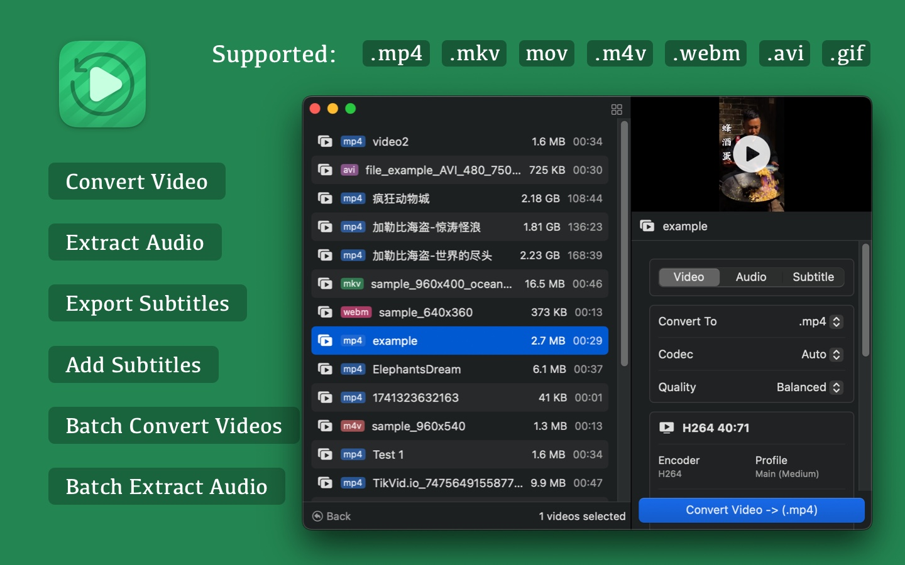
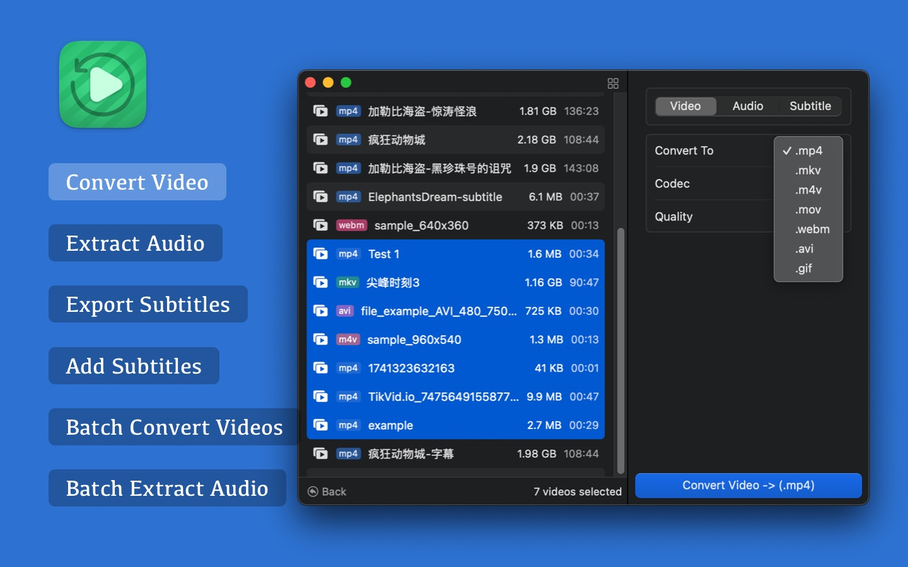
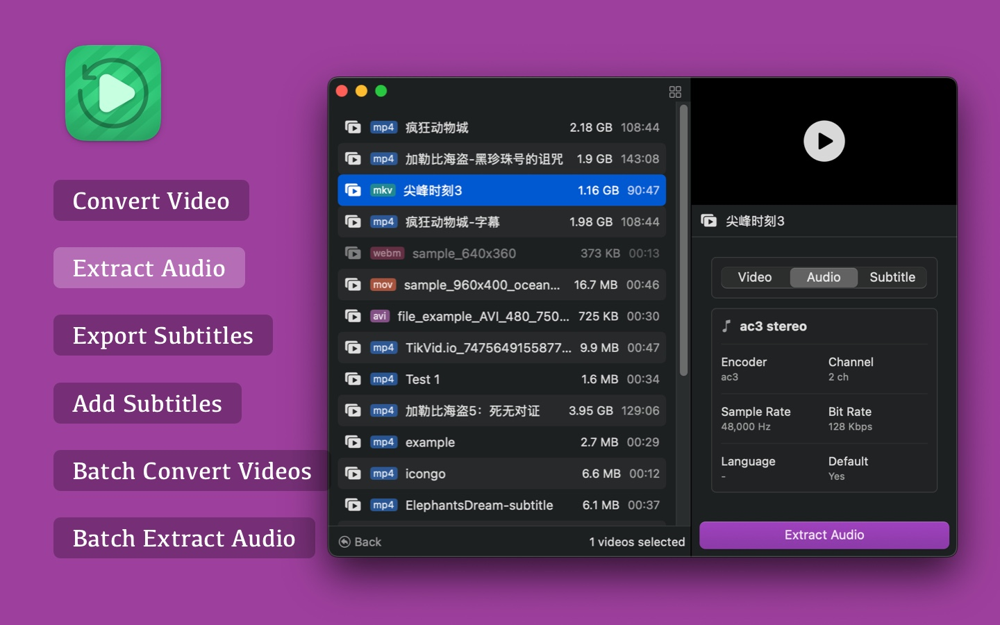
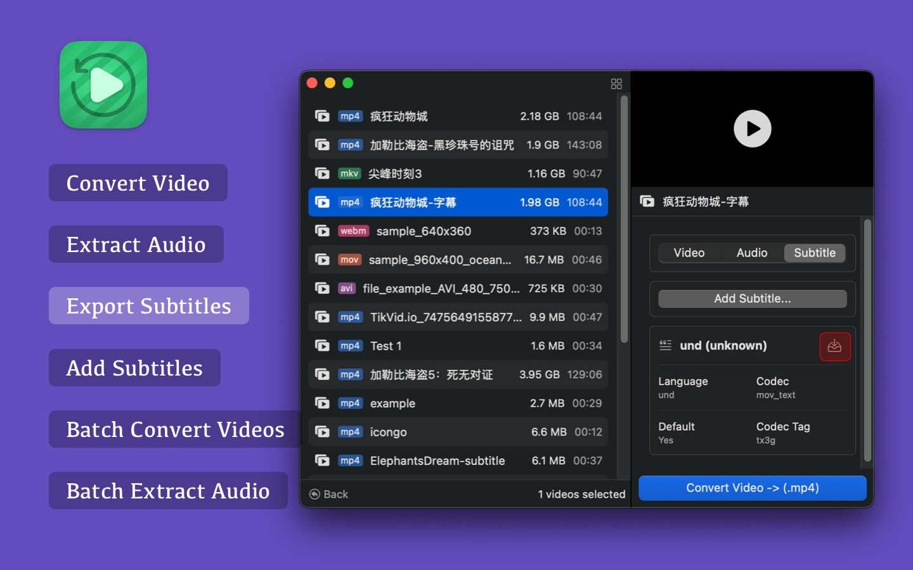
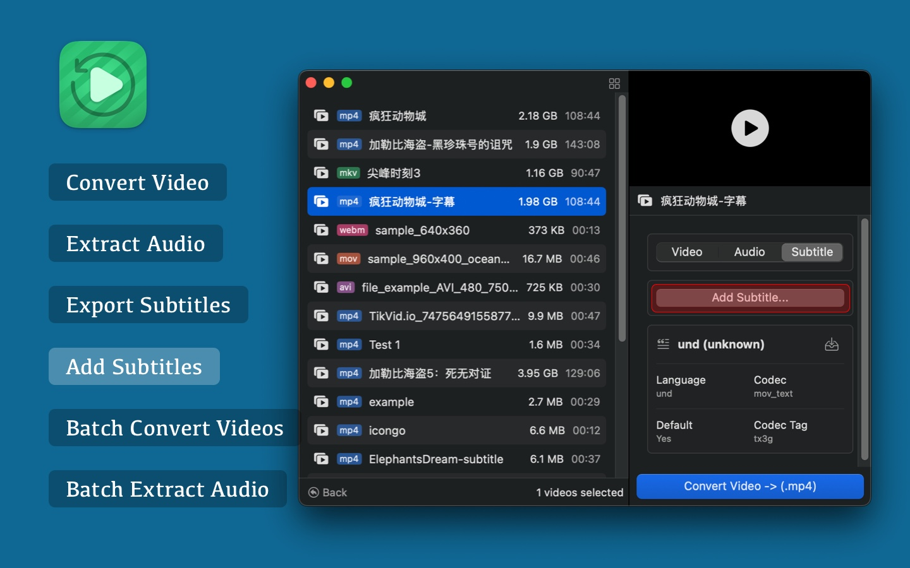

    
Videoer is a powerful video format conversion tool that supports mutual conversion between MP4, MKV, M4V, MOV, WEBM, AVI, GIF, and other formats. Whether converting a single file or processing multiple files in batches, Videoer makes it easy. Additionally, Videoer provides various practical features such as audio extraction and subtitle management, making your video processing more efficient and convenient.
■ Video Conversion - Easily convert between various popular video formats, including MP4, MKV, M4V, MOV, WEBM, AVI, and GIF.
■ Audio Extraction - Extract audio from video and export it to formats such as MP3, AAC, WAV, FLAC, ALAC, OGG, OPUS, AC3, EAC3, DTS, and TrueHD.
■ Subtitle Export - Analyze and extract embedded or external subtitle files (such as SRT, ASS, and VTT) from videos.
■ Add Subtitles - Embed subtitles into videos, supporting multiple subtitle formats to enhance the viewing experience.
■ Batch Video Conversion - Convert multiple video files simultaneously to improve processing efficiency.
■ Convert Videos Larger than 1GB - Easily handle large files while ensuring conversion quality.
■ Batch Audio Extraction - Extract audio from multiple videos at once, ideal for audio editing or archiving.
Whether you're a video editing enthusiast, content creator, or a professional who frequently processes video files, Videoer meets your needs and makes video conversion simpler and more efficient!